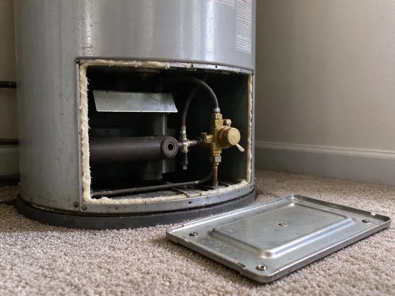

Sewer Repair in Logan, UT
Camera first, then a written quote. That is how BPK Plumbing runs sewer repair for homeowners and landlords in Logan, UT.
- Same-Day Sewer Camera Checks
- Licensed Utah Plumbers
- Depth Locating on Every Inspection
- Licensed Utah Plumbing Contractor
Get the Sewer Line on Camera in Logan, UT
One visit to find it, one quote to fix it. We usually diagnose on the first trip.
Sewer Repair in Logan, UT for Clay, Cast Iron and Plastic Lines
BPK Plumbing sends sewer techs to Logan, UT with the camera, locator, jetter and digging gear already on the truck. A rental auger cannot tell you why the line keeps clogging. We look at the pipe, find out whether it is a clog, a crack or a sag, and price the repair that matches what we saw on screen. That is the whole method.
Some of what we do:
- Root Cutting & Hydro-Jetting
- Recorded video of every inspection, yours to keep
- Cleanout Installation at the Foundation

Additional Plumbing Repair Services in Logan, UT
We offer expert plumbing repair services across Logan, UT to stop leaks, clear blockages, and keep every fixture working the way it should.


Customers
Why Choose BPK Plumbing for Sewer Repair in Logan, UT?
A camera inspection is cheap compared to a guess. We find the real cause before we quote anything. Most of the time the trouble is one or two joints, and replacing a whole lateral when a six-foot section would do is money you never get back. If the pipe has life left in it, we say so.
- Local Code, We work to Utah plumbing code with permits and inspections handled for you.
- Tested Work, We run water through the repair and check it on camera before backfill.
- Licensed Plumbers, Licensed Utah plumbers handle the repair and the final tie-in.
Citywide Coverage
From the center of Logan out to the edge of town, we run sewer calls daily. Distance does not change the price. The same camera, the same written quote and the same tested repair go to every customer in our service area.
Experienced Team
Our sewer techs have repaired thousands of feet of main line in clay, cast iron, ABS and Orangeburg. They read footage quickly. A tech who has seen hundreds of lines can tell a belly from a break or a root mass from a grease plug in seconds, and that experience is what keeps the repair pointed at the actual problem.
Safety-First Approach
Sewer gas can build up in a basement or crawlspace during a repair. Fans go in first. Our techs check for strong odors and ventilate any tight space before working near the open line.
Trusted Certified Logan Plumbing Services Professionals
At BPK Plumbing, we are proud to offer certified plumbing services throughout Logan, UT. Credentials matter in this trade. Every repair, install and maintenance visit follows strict safety and quality rules, and the plumbers doing the work carry recognized industry credentials.
Call Us Now PHCC Plumbing Contractor Recognition
PHCC Plumbing Contractor Recognition Better Business Bureau (BBB) Accreditation
Better Business Bureau (BBB) Accreditation Angi Certified Pro
Angi Certified Pro ISO 9001 Quality Management Certification
ISO 9001 Quality Management CertificationWhat Sewer Repair Covers in Logan, UT
Sewer Pipe Relining in Logan, UT
Relining builds a new pipe inside the old one. The old pipe gets jetted clean before anything else. A flexible liner saturated with epoxy is pulled or inverted into place, inflated against the old wall and left to cure, so every crack and leaking joint is covered by one jointless pipe. The finished pipe loses a little diameter. On a four-inch residential line, that rarely matters.

Orangeburg and Cast Iron Sewer Replacement in Logan
Orangeburg is wood fiber soaked in coal tar. Over decades it goes oval and blisters. Cast iron from the same era rusts from the inside, builds scale and eventually splits along the bottom where the sewage runs, and once the camera shows failures along the whole run, patching it stops being worth the money. PVC goes in, usually end to end. Trenchless bursting is often an option.
Sewer Line Hydro-Jetting in Logan
A hydro-jetter pushes water at several thousand psi through a nozzle that scours the full inside of the pipe. Snaking just opens a path. That makes jetting the better choice for grease, scale and fine root growth, and it is the standard prep step before any pipe lining job. Brittle or broken pipe is a different story. We check the pipe on video before we jet it.
Root Intrusion Repair in Logan, UT
Cutting roots treats the symptom. Fixing the joint treats the cause. After clearing the line, we look at each rooted joint on camera and decide between a short sectional liner, a full liner or cutting in new pipe, based on the number of bad joints and the spacing between them. One or two joints is a small job. Ten or twelve usually justifies lining the run.
Restaurant and Retail Sewer Repair in Logan
Restaurants, retail centers and multifamily buildings load a lateral far beyond a single house. Grease and wipes cause most of it. We jet the line, camera it, and repair the weak section with options that limit how long you are closed, such as overnight work or temporary bypass pumps that keep the building running. We also install two-way cleanouts for future maintenance.
Emergency Sewer Repair in Logan
Raw sewage on a basement floor is not a next-week problem. Our phone is answered after hours. The first goal on an emergency call is to get the line flowing, usually with a cable or jetter, and then camera it to find out whether you have a clog or a structural failure that will back up again tomorrow. The real repair may be scheduled for the next morning. Until then, we tell you which fixtures are safe to use.
Sewer Repair Cost Comparison in Logan, UT
A spot repair is the cheapest fix when the rest of the line is sound. Lining costs more per foot. It avoids excavation, though, and on long runs under driveways or patios the savings on concrete and landscaping often outweigh the higher price of the liner itself. Full replacement is right for Orangeburg or a line broken in several places. You get each option in writing with a number attached.

Tree Root Invasion Solutions in Logan
Roots in a sewer line are not the tree's fault. The pipe was leaking first. Warm, wet, nutrient-rich air escaping from a loose joint draws roots toward the line, and once they get in they thicken until they crack the pipe or separate the joint completely. We cut them out, then talk about the long-term fix. Lining or a joint replacement keeps them from coming back.
Local Sewer Repair in Logan, UT
You want a crew that shows up, finds the problem and fixes it without a week of back and forth. We built our sewer service around that. One tech diagnoses it on camera, the same company does the dig and the repair, and you are not stuck coordinating a drain cleaner, an excavator and a plumber yourself.
Most sewer repairs in Logan are scheduled within a day or two of the camera inspection. Emergencies move faster. Phone (385) 543-4073 with what the drains are doing, and the dispatcher will say which fixtures are safe to use until the truck arrives.
BPK Plumbing at a Glance
- Fully licensed plumbing team covering Logan, UT
- Same-day appointments and 24/7 emergency response
- Clear written estimates, no hidden fees
- 4.8-star rated by 470+ Utah customers
Logan Map
Logan Information
- Population
- 55,250
- Area codes
- 435/385/801
- Service area
- Logan and towns within a 40 mile drive
- Nearby
- Ogden, Layton, Salt Lake City, Millcreek
A main sewer line in Logan, UT can crack, sag or fill with roots long before anyone notices, and a camera is the only honest way to tell which.
Talk to a Plumber
Call BPK Plumbing for honest, reliable plumbing from people who know the trade in Logan, UT.
Our Specialized Plumbing Services in Logan, UT
At BPK Plumbing, you get every kind of plumbing service from one company across Logan, UT. From leak detection to full system installs, our team works fast and charges fair prices on homes and commercial properties alike. Take a look at our core services below:


How Our Sewer Repair Process Works in Logan, UT
Three steps, most of the time inside a couple of days.
Call and Describe the Problem
Phone BPK Plumbing at (385) 543-4073 and tell us which drains are acting up. We will ask a few questions and book a time.
Camera and Quote
A tech runs a camera through the line, marks the problem on the ground and writes up every option with a cost.
Repair & Test
Once you approve, we make the repair, test the flow and verify it on video, then backfill.
Frequently Asked Questions About Sewer Repair in Logan
A single spot repair typically runs $1,500 to $4,500. Deeper pipe costs more to reach. Trenchless lining usually lands between $80 and $250 per foot, and full replacement of a typical residential lateral ranges from $5,000 to $15,000, with driveways and patios pushing it toward the high end. We price it in writing after the video.
Standard policies usually exclude the pipe itself. Wear and roots are not covered. They may cover water damage inside the house that resulted from the backup, and a few carriers offer an add-on that covers the line from the house to the street. Check your policy for that rider. We give you video and a written report for the claim.
Watch for clogs that keep coming back in more than one drain. Toilets that gurgle count too. A sewer smell in the yard, a strip of grass that is greener than the rest, or water rising in the shower when the washing machine empties usually mean the main line is involved, not just one drain. Video tells you for sure.
Clay, cast iron, ABS, PVC and Orangeburg all come up in Logan and around Utah. We work on all five. Joining new PVC to old clay or cast iron takes a shielded transition coupling sized to the outside diameter of each pipe, and getting that fitting right is what keeps the repair from leaking at the joint later. The usual couplings ride on the truck.
Digging up and replacing a lateral means trenching near gas and electric lines. It also means raw sewage. The new pipe has to hit the right slope, sit on proper bedding and connect with the correct transition fittings, which is why many cities only permit licensed plumbers to do it. Leave the cable machine work to us too.
A rental auger can open a soft clog. Structural damage stays. Forcing a cable through a broken or offset joint can snag, tear the pipe further or leave a cutter head stuck underground, which turns a camera visit into an excavation job. Repeat clogs deserve a video inspection.
Tree roots are the top cause in established neighborhoods. Basements are common in Utah homes, which places water heaters, softeners and main drains below grade where slow leaks can go unnoticed. Age plays a big part. Cast iron rusts from the inside and clay joints separate, while grease, wipes and paper towels catch on those rough spots until nothing gets through. Most failures involve two or three of these at once.
It is a repair done without opening a trench along the whole pipe. Two small pits, usually. Cured-in-place lining and pipe bursting are the two common methods, and both leave driveways, sidewalks and established landscaping mostly untouched compared to a full dig. The video shows whether it will work for you.
What Our Customers Say About Our Plumbing Experts

Jessica T.
We were adding a gas range in a kitchen remodel and needed a new line run from the meter. The plumber pulled the permit, ran the pipe through the crawl space, and had it inspected and approved within the week.
Gas Line Repair · Taylorsville, UT
Rachel N.
Hard water was leaving white crust on every faucet and our dishwasher was struggling. The tech tested the water, recommended a softener sized for a family of five, and installed it with a bypass valve in one afternoon. The spots on our glasses are gone.
Water Softener · West Valley City, UT
James P.
Our restaurant had a slow leak at the hand sink that was rotting the cabinet base. BPK Plumbing came in at six in the morning before prep, replaced the trap and both supply lines, and was packed up before my first cook clocked in.
Commercial Plumbing · Taylorsville, UT
Greg S.
I manage a small strip center with six tenants. BPK Plumbing handles our annual backflow testing and fixed a recurring clog in the shared sewer line that had been backing into the nail salon. Their reports come in clean and on time.
Commercial Plumbing · Millcreek, UTMarcus H.
Grease from the fryer line kept clogging the kitchen drain at my diner. BPK Plumbing hydro jetted the line after closing, showed me the buildup on camera, and set us up on a quarterly cleaning so it does not catch us on a Friday again.
Drain Cleaning · Millcreek, UTLisa C.
Water was pouring out from under the washing machine on a holiday weekend. BPK Plumbing talked me through closing the valves over the phone and had a plumber at the house within ninety minutes. It was a burst fill hose.
Emergency Plumbing · Millcreek, UT